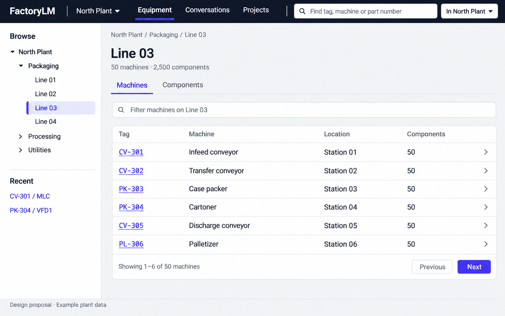
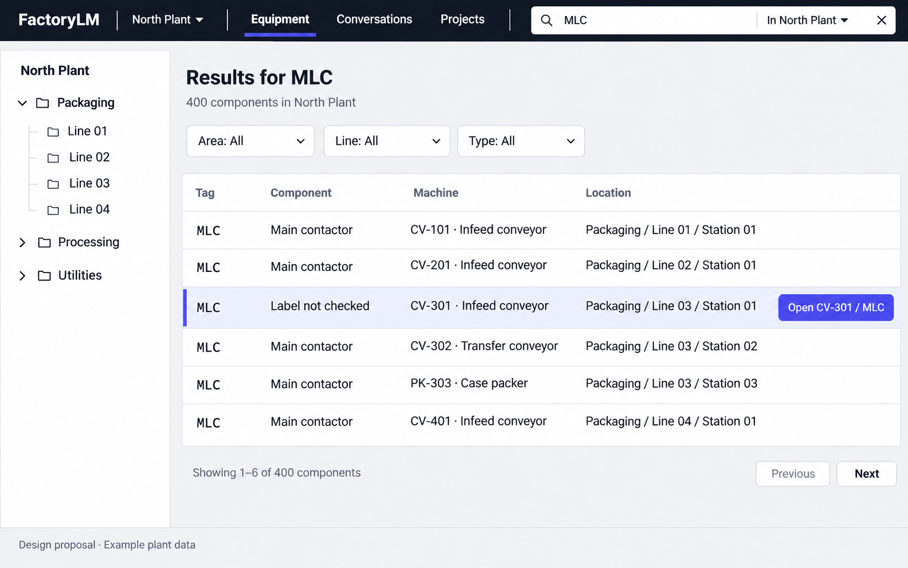
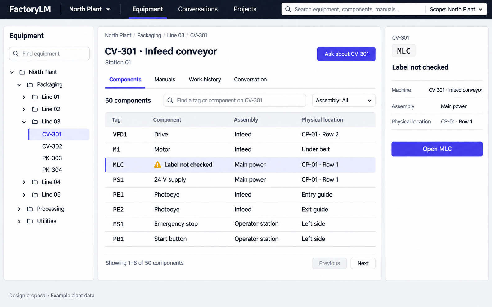
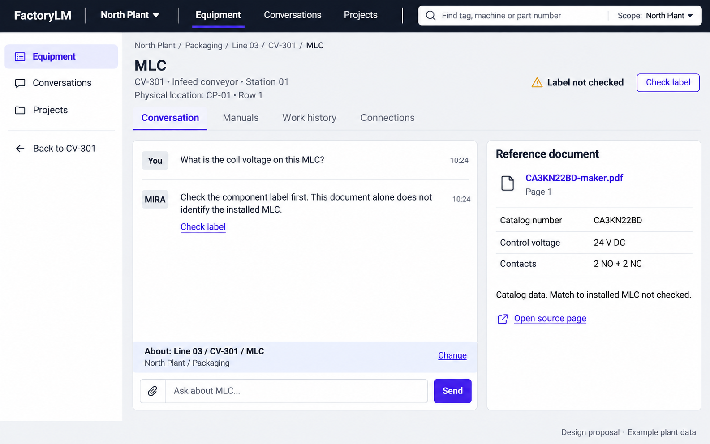

Design proposal · Example plant data. Four revised static mockups, generated from today's Hub screenshot. No deployed interface or plant-capacity result is claimed.
Site → Area → Line / cell → Machine → Assembly, when useful → Component
Search, recent items and direct equipment links bypass the tree. Company sits above site when needed. Utilities and standalone equipment do not need a fictional production line.
Architecture estimate and phased delivery plan · Current handoffs and reconciled agent queue. Provisional from-resume estimate: connected bench 7–12 working days; factory-scale pilot 4–6 weeks, including current closeout allowance.
1. Browse a line
Show machines first. Expand only the branch in use; search can jump directly to a component.

2. Find the correct MLC
Repeated tags stay separate. Each result shows the machine, line and location before it can be opened.

3. Work within one machine
Search and filter component rows. Assembly and cabinet location help a technician find the physical item.

4. Ask about that installed component
Keep the exact target beside the question. A catalog value does not prove the installed component's identity.

Hierarchy decisions
| Concern | Decision |
|---|---|
| Thousands of components | Browse one branch at a time. Search on the server and return bounded pages. Do not download the whole plant to open the picker. |
| Repeated tags and models | Identify by the canonical record, never tag text alone. Show machine and location beside every matching result. |
| Containment and connections | Keep drives and motors as peers within their assembly. Show verified control, power and wiring relationships separately. |
| Functional position and replacement | Keep the machine position and its history distinct from the physical item installed there. A replacement does not inherit identity or condition verification. |
| Projects and conversations | Keep permissions and collaboration boundaries. A project is not another physical machine. Browsing a line must not silently change an active question's target. |
| Unknown identity or location | Say what is missing. Make unplaced equipment findable; do not silently hide it or fill gaps with guesses. |
| Style and copy | Flat token-based surfaces, thin rules, compact rows, one action accent, useful labels. No hero cards, decorative status, AI sparkles or claims without evidence. |
What still needs engineering proof
The inspected picker filters a fetched asset array in the browser, and the namespace route constructs a full tree. The scale revision needs bounded search and child loading, tenant-aware results, and performance tests. The former bench-only assumption of no API work no longer holds.
Proposed test fixture: 8 lines × 50 machines × 50 components = 20,000 components, with repeated MLC and VFD1 tags. Test correct selection, search cancellation, pagination, deep links, moved and replaced equipment, permissions, stale context, and offline recovery. These tests have not been run.
Sources, prompts and design limitations
- FactoryLM UI style guide and unchanged canonical token copy. The HTML gallery imports these tokens; raster mockups are visual interpretations, not pixel-exact token compliance.
- Existing containment and control-relationship decision.
- OPC Foundation ISA-95 equipment levels: site, area and production structures inform the model. Optional machine/assembly/component navigation is our product design, not a claim of a mandated universal ISA-95 tree.
- W3C contrast guidance. Target accessible text contrast and large touch controls in implementation; image inspection alone does not certify accessibility.
- Exact prompts · Image hashes and token provenance · Engineering handoff and review cases.
The built-in image generation tool made these images. Component identity, relationships, navigation, examples and counts are simulated. The source panel illustrates catalog facts, not a reproduced manufacturer PDF. No production UI, asset hierarchy, UNS path or database was changed.